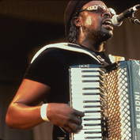

C.J.Chenier & the Red Hot Louisiana Band

Журналисты демократичной Америки очень любят раздавать музыкантам различные титулы, чем витиеватее, тем лучше. Вот и в этот раз газета Washington Post назвала этого исполнителя "Наследным принцем луизианского блюза". Сам C. J. Chenier, лидер Red Hot Louisiana band, считает, что все эти названия, конечно, хороши, но истина - в музыке. "То, что мы играем - это конкретные песни, - говорит он с гордостью, - песни, которые рассказывают каждая свою историю и заставляют вас танцевать."
Музыка Си Джея всегда опиралась на традиции, принятые в музыке западного побережья. Он вырос в Техасе, и с детства питал слабость к хорошей музыке: James Brown и Funkadelic, John Coltrane и Miles Davis. Под влиянием этих артистов он рано выучился играть на саксофоне и играл во многих черных бэндах родного Порт-Артура, затем изучал музыку в колледже и мечтал стать джазовым или фанковым музыкантом.
Однако за неделю до двадцать первого дня рождения он получил предложение присоединиться к группе своего отца - Red Hot Louisiana Band. "Я понятия не имел, что они вообще играли, не знал ни единой ноты из их репертуара, но ребята помогли мне начать. И однажды я вдруг ощутил, что меня прет от этой музыки, и именно эту музыку я хочу играть и дальше". Но однажды, когда отцу стало плохо. Он был вынужден взять в руки аккордеон, и с тех пор открывал шоу.
Клифтон, отец Си Джея, умер в 1987 году, и сын унаследовал его аккордеон и его группу. Он взялся за музыку, надстраивая принятые стандарты элементами джаза и фанка, на которых рос сам. C.J. Chenier and the Red Hot Louisiana Band продолжили выступать, выпустили три альбома и играли по несколько сотен концертов в год. Они привлекали внимание публики, критиков и коллег-музыкантов, выступая на крупных фестивалях вроде New Orleans Jazz & Heritage Festival, San Diego's Street scene, and Milwaukee's Summerfest. Легендарный Пол Саймон заметил Си Джея и пригласил его принять участие в записи своего альбома "Rhythm Of The Saints", а впоследствии и поездить с его группой на гастроли.
Следующий виток биографии C.J. занес его на Alligator Records, лэйбл, принесший известность
многим блюзовым музыкантам, в том числе, и его отцу. Кстати, Грэмми, которую получил
Chenier-старший за альбом "I'm Here", выпущенный Аллигатором, была первой наградой такого
уровня для самой компании. Дебюь сына под названием
Но все эти признаки популярности не изменили отношения блюзмена к своему творчеству: "Когда ты выходишь на сцену с джазовой командой, люди сидят, едят и пьют себе. Но когда ты начинаешь играть какой-нибудь развеселый блюз, люди встают на уши. У вас не получится придти на наше шоу и стоять с несчастным лицом где-нибудь в уголке, рано или поздно вы начнете улыбаться и притопывать ногой. Это позитивная музыка, которая заставит вас танцевать".